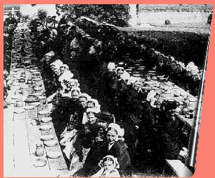
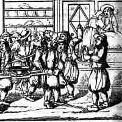
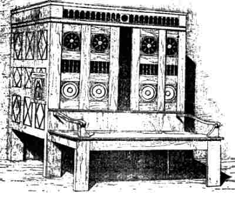
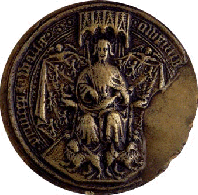

La Ceinture de Noces
The Wedding Belt
Dialecte de Cornouaille
|
Selon Luzel et Joseph Loth, cités (P. 389 de son "La Villemarqué") par Francis Gourvil qui se range à leur avis, ce chant historique ferait partie de la catégorie des chants inventés , une hypothèse à laquelle il est bien difficile de ne pas souscrire! (Cf. cependant, le § "Une marqueterie de chants" ci-dessous). |
 |
According to Luzel and Joseph Loth, quoted by Francis Gourvil (p. 389 of his "La Villemarqué"), this historical song was " invented " by its alleged collector, (which hardly anybody can deny!) (See, however § "A patchwork of songs" here below). |
Ton
Mode lydien
Rythme 3/4 et 2/4 (mesures 5, 10 et 22)
| Français | English |
|---|---|
|
I
1. Hier je me suis fiancé. Aujourd'hui ce message: Ordre du Baron Rieux de faire mes bagages Et rejoindre son armée qui va porter secours, S'il est possible, aux Gallois, nos frères de toujours. 2. - Mon page, prépare-toi, nous allons tous les deux. Chez ma douce fiancée, lui faire mes adieux. Si je ne le fais ce soir même, j'en ai bien peur, D'amertume et de chagrin va se briser mon cœur. - 3. Il approcha du manoir, pâlissant à vue d'œil. Et son cœur battait à rompre en franchissant le seuil. - Approchez, mon cher seigneur! Approchez-vous du feu! Je m'en vais vous préparer un souper pour tous deux. 4. - Ma chère tante, merci, vous êtes fort gentille, Mais je voulais seulement parler à votre fille. La dame entendant cela, retira ses souliers, Grimpa sur le banc du lit , sur la pointe des pieds, 5. Puis se penchant au dedans, s'appuyant sur le bord: - Loïda, réveille-toi! Allons, ma fille, sors! Ma fille, sors de ce lit, il faut te réveiller! Ton fiancé vient te voir et tient à te parler. - 6. A ces mots la jeune fille a bondi hors du lit, Cheveux noirs comme le jais, peau blanche comme lis: - Hélas, ma douce chérie, hélas ma Loïda, Un navire m'attend pour m'emporter loin de toi. 7. M'emporter en Angleterre avec ceux du baron. Dieu seul sait combien mon cœur éprouve d'affliction! - Au nom du ciel! N'y vas pas! N'affronte pas la mer! Vois-tu, le vent est changeant et l'océan pervers! 8. Si tu venais à mourir, que deviendrais-je donc? Nouvelles qui tardent trop, rendent le temps si long. J'irai le long de la côte frapper à chaque huis - Gens de mer, a-t-on des nouvelles de mon mari? - 9. La jeune fille pleurait. Pour calmer son chagrin: Il dit: - Tais-toi Loïda, pleurer ne sert à rien. Je rapporterai pour toi de ce lointain pays Une ceinture de noces ornée de rubis. - 10. Triste à voir, ce chevalier tenant sur ses genoux, Près du feu, sa bien-aimée qui, autour de son cou, Avait passé ses bras blancs et pleurait en silence. L'aube sera le début d'une bien longue absence. 11. Cette aube paraît enfin. Le chevalier s'écrie: - Le coq chante, bientôt il fera jour, mon amie. - Impossible, mon ami, impossible, il nous ment C'est la lune encor qui luit, là-haut, au firmament! 12. - C'est bien le soleil, pourtant, qui filtre par la porte. Il est temps que je m'en aille et que la nef m'emporte. - Les pies caquetaient tandis qu'il se rendait au port: "La mer est traîtresse, mais les femmes plus encor!" II 13. A la Saint-Jean d'automne , la fiancée disait: - Loin sur l'océan j'ai vu, du haut des monts d'Arrez, Loin sur la mer, en péril, je vis un bâtiment. A la poupe se tenait celui qui m'aime tant. 14. Je l'ai vu, sabre à la main, en train de ferrailler, Tout autour de lui des morts, chemise ensanglantée. - C'en est fini, pauvre ami! bien fini!, disait-elle. - Et prit fiancé nouveau comme étrennes nouvelles. 15. Des nouvelles cependant parvenaient au pays - La guerre était achevée! Le chevalier chez lui. Il est de retour chez lui, le cœur dispos et gai. Et le soir même il se rend auprès de l'être aimé. 16. En approchant du logis, il entend les vielles, Voit rayonner le manoir de l'éclat des chandelles: - Etrenneurs , vous qui partout quêtez, joyeuse clique, Bonne recette au manoir? Quelle est cette musique? 17. - Ce sont les joueurs de vielle et ils chantent par couples: "La soupe au lait sur le seuil! Laissez entrer la soupe!" Ce sont les joueurs de vielle. Ils chantent trois par trois. "La soupe au lait est entrée! Honneur à qui la boit!" III 18. Les pauvres du mariage à table s'étaient mis, Quand vint un pauvre truand qui voulait être admis Parmi ceux-ci. - Pourrait-on me donner à manger Et l'asile pour la nuit. Je ne sais où coucher. 19. - Sûrement , mon cher truand, vous êtes bienvenu. A cette table il y a place pour un de plus. Approchez donc, mon brave homme, entrez dans la maison, Mon mari comme moi-même, nous vous servirons. - 20. Après la première danse, elle lui demanda: - Qu'avez-vous donc, pauvre ami, que vous ne dansiez pas? - Mais rien du tout, madame, si je ne danse point, C'est la fatigue d'avoir fait un si long chemin. 21. Après la seconde danse, elle lui demanda: - Est-ce toujours la fatigue? Êtes-vous donc si las? - Oui, je suis bien las, madame, et j'ai pour mon malheur, Outre cette lassitude, un grand poids sur le cœur. 22. Après la troisième danse, riant aux éclats, Elle dit: - Il faut qu'on vienne danser avec moi! - Un bien grand honneur que je ne crois pas mériter. Mais qui donc aurait l'audace de le refuser? - 23. Tandis que tournait le bal, vers elle il se pencha, Avec un rire amer, à l'oreille il lui glissa: - Où donc est la bague d'or dont je vous fis présent Au seuil de cette salle, il y a, jour pour jour, un an? - 24. En levant les yeux au ciel, elle joignit les mains: -J'ai vécu jusqu'à ce jour libre de tout chagrin, Je pensais que j'étais veuve, mais j'ai deux maris! - Vous pensiez mal, vous n'en avez aucun ma jolie! - 25. Et il tira de sa veste où elle était cachée Une dague dont au cœur il l'a violemment frappée, La dame, tête en avant, sur les genoux tomba Répétant "Mon Dieu! Mon Dieu!" Ensuite elle expira. IV 26. Dans l'église de Daoulaz, la statue de Marie Est parée d'une ceinture où brillent des rubis, Qui viennent de l'outre-mer. Qui donc en a fait don? Le moine à ses pieds le sait qui prie pour son pardon? Traduction Christian Souchon (c) 2008 Notes Str. 1 Nos frères gallois : un soulèvement contre les Anglais, conduit par un noble gallois, Owen Glendour (1359 - 1416), eut lieu en 1405. Il reçut le soutien d'une armée bretonne réunie par le maréchal Jean de Rieux qui se joignit aux Gallois à Carmarthen. Ils furent engagés dans plusieurs combats victorieux avant de retourner en Bretagne. Str. 4 Banc du lit un élément de l'ancien lit clos breton (gwele kloz: cf. ill. ci-dessous). Str. 9 La ceinture de noce jouait un rôle important dans l'ancien rituel de mariage(cf. "la ceinture de noce" ) Str. 13 La Saint Jean d'automne : 21 août (commémoration de la décollation). Str. 16 Etrenneurs (eginanerien): cf. le chant "La tournée des étrennes" Str. 17 La soupe au lait est une autre coutume bizarre: Une soupe au lait où trempent des tranches de pain liées entre elles par des fils est servie aux jeunes mariés qui doivent l'avaler assis dans le lit nuptial, tandis que les instruments exécutent les morceaux cités dans la ballade et que tout le monde rit aux éclats: cf. le chant "La soupe au lait" Str. 18/19 Les pauvres du mariage cf. Le chant des pauvres . Le lendemain des noces, les pauvres du canton étaient invités à finir les restes et le service était assuré par les jeunes mariés eux-mêmes. Pour les remercier les pauvres exécutaient des rondes en s'accompagnat de chants. Str. 26/9 "Glaz-aleuret" : str. 9, "ur zeienn degasin deoc'h dimeus glas-alaouret" ressemble fort à un barbarisme. Str. 26 "ur zeienn glas-alaouret" signifie "une centure beu marine". Si le mot bizarre "rumenluiet" qui la suit dans les deux cas, peut vouloir dire "étincelante de rubis" ("ruz"=rouge, "maen"=pierre, "luiañ"=luire), il est certain que l'auteur de ce texte, quel qu'il soit, donne à cette expression le sens de "venant d'outre-mer", d'autant qu'il est précisé str. 9 que cette ceinture est "pourpre" (br. "moug"). C'est en tout cas ainsi que cette tournure est traduite par La Villemarqué. Sur cette confusion, cf. note suivant le texte de Chevalier Bran )! |
I
1. The day after my betrothal, the order came to me To follow the Baron Rieux and sail across the sea, Yes, to follow the Lord Baron, that's what the orders were And to support, if it could be, our Briton brethren there. 2. - Now, come with me, my little page, we go on an errand: I must say goodbye to the girl who's given me her hand. And I must say tonight to her goodbye before I go Or my heart will break in my chest, be worn down by sorrow. - 3. The nearer they came to her house, the more anxious he grew. And when he passed her threshold, was astir through and through. - Come in, my dear sir, just come in. Sit down next to the fire, While I'm preparing a light meal for both you and your squire. 4. - With your leave, honourable aunt, I do not want to dine. To let me speak with your daughter, I hope you won't decline. - On hearing that she's taken off her shoes, so as to tread Carefully and she climbed upon the side bench of the bed . 5. She climbed nimbly upon the bench, leaned over the bedside: - Wake up, daughter Aloïda. Get up quickly! she cried. Wake up, daughter, wake up, I say, and get out of that bed And speak with the young gentleman you are engaged to wed! - 6. As soon as the girl was awake, she rushed out of the bed. On her shoulders as white as snow, her jay black hair was spread: - Alas, sweetheart, O my darling Loïda, if you knew. I must embark without delay. I must take leave of you. 7. I must sail over to England with the rest of the host. You must know the pain in my heart that to you I have lost! - For God's sake! My husband-to-be, don't go! I disagree! For so changeable is the wind, so deceptive the sea! 8. How if misfortune makes you die? What would become of me? To hear nothing of you for long, what heartbreak it will be! Asking from hut to hut, along the sea shore, I shall roam: - Did you hear anything of my betrothed one, in this home? - 9. To soothe the young girl bathed in tears, he said and gave a sigh: - Be quiet, be quiet, Aloïda, about me don't cry. I shall bring you from overseas a gorgeous gift, to wit, A fine wedding belt of purple with ruby stones on it. - 10. T' was a sad sight: by the hearth side, on a stool sat the knight Upon his knees, leaning on his shoulder her head, his bride Who cried and her two snow white arms around his neck had wrapped, Both in wait of the day to dawn, that would set them apart. 11. And when the dawn at last did come the knight said with a sigh: - A cock's crowing I heard, methinks, my dear, the day is nigh. - Impossible! My precious jewel, impossible! He cheats It is the moon over the hill, it is the moon that peeps. 12. - I'm so sorry, but what I see through the cracks of the door Must be sun light. So now it's time to repair to the shore. - Off he went, on his way listened to the magpies' chatter: "Of sea and wife the more mistrust deserves the latter!" II 13. On Saint John's death memorial day , the young girl did recount: - I have seen afar on the main, from the top of the Mount Of Arrée, afar on the main, a ship in great danger. And the one who stood on the stern was none but my lover, 14. Engaged in bitter fray, he held in his hand a long sword. All around him dead men and his shirt was drenched in blood. My poor lover, you are done for! You are fighting in vain! - On boxing day, joyful and gay, she would marry again. 15. With time and tide, good news arrived and spread over the land: - The knight was known to return soon: The war was at an end! Now he's back home, no troublesome sorrow weighs on his heart. The same night shall call on his bride, in a new life to start. - 16. When he was near, he came to hear sounds of hurdy-gurdy And the tapers that the manor brightly lit were many: - Gift collectors upon your tours were you in that manor? Is it the homestead you come from? What tune is played in there? 17. - A tune that wheel -fiddlers attuned two by two will perform The words are "The wedding milk soup is passing the threshold." The tune of the wheel-fiddlers, aye, now attuned three-by-three: "It's the wedding milk soup that into the house they carry!" III 18. All the beggars at the table were sitting already When at the door a villain poor claimed hospitality. - Would you give me something to eat and to sleep in a bed. It is dark now and I don't know where I shall lay my head. 19. -You are welcome to our new home. And we'll grant your requests. Just take a seat and you shall eat with all the other guests. Come in, come forth, good man, grounds for refusing have we none. I shall serve you, my husband, too: it's the way things are done. - 20. When the dance after the first course started she asked him: - What's the matter with you, poor man, why do you shun dancing? - There's nothing the matter with me. I don't dance: it's only Because I have not yet got over the weary journey. - 21. By the dance round to the second course she asked him again: - Are you really still so weary: from dancing you refrain! - Yes my lady, I do not dance because I am weary And not counting that there's some thing that makes my heart heavy. 22. But she resumed by the 3rd round of dance, with charming smile, And said to him: - Into dancing with me let be beguiled! - Your demeanour is an honour for me, I don't merit. But no one would dare be so rude as not to accept it. - 23. As they were dancing, suddenly to her he bent over And he murmured into her ear, with a hateful snigger: - What did you do of the gold ring as a gift I gave you At the door of this very hall, today, one year ago? - 24. She put her hands together and raised her eyes heavenwards: -My God I had till now lived glad, protected from hazards. I thought I were a widow but had two husbands somehow. - Wrongly you thought, because for aught I know, you have none now! 25. A glittering blade that hidden laid from his waistcoat he drew The poor lady! Most savagely her heart he pierced through. First she bent down, then slowly on her knees she did subside, "My God, my God!" were the last words she stammered. And she died. IV 26. The Virgin has in Daoulaz her image in the church. For the donor of the collar the statue wears don't search: It's a ribbon that ruby stones from overseas adorn. Just ask the monk in penance sunk to her feet, why he mourns. Translated by Christian Souchon (c) 2008 Notes Stanza 1. Briton brethren : a rising against English rule, led by a Welsh nobleman, Owen Glendour (Owain Glyndwr 1359 - 1416), took place in 1405. It was supported by a Breton army under Marshall of France, John of Rieux that landed in force at Milford Haven (with over 2800 knights and men-at-arms). They took part in several successful battles (Haverfordwest, Carmarthen, Tenby and Great Witley in England) before they returned to Brittany. Stanza 4. Side bench of the bed an element of the Breton box bed of old (gwele kloz: see picture below). Stanza 9. The wedding belt played an important part in the Breton wedding ceremonial (see "the Girth" ) Stanza 13. Saint John's death day : 21st of August. Stanza 16. Christmas gift collectors (eginanerien): see the song "The Christmas Gift Tour" Stanza 17. The wedding milk soup is another strange wedding custom: A milk soup with slices of bread tied together with threads is served to the bride and bridegroom who are to swallow it up sitting in their bed, while the fiddlers play the songs mentioned in the present ballad and everybody laughs loudly. See the song "Soubenn al Laezh" Stanzas 18/19. The beggars at the wedding : see The song of the poor . On the day following the wedding the poor of the neighbouring were invited to eat the leftovers, and were served by the bride and the bridegroom themselves. To thank them the poor would perform a ring dance and sing songs. Stanzas 26/9 "Glaz-aleuret" : st. 9, "ur zeienn degasin deoc'h dimeus glas-alaouret" seems to be a barbarism. St. 26 "ur zeienn glas-alaouret" means "an ultramarine belt". If the strange adjective "rumenluiet" appended to the word "belt" in both cases may translate as "sparkling with ruby stones" ("ruz"=red, "maen"=stone, "luiañ"= to sparkle), there is no doubt that the author of these lines, whoever he may be, understands "glas-alaouret" as "from overseas", all the more so, since the belt is said to be "moug" (=purple) in stanza 9. Anyway, that is how it is rendered in French by La Villemarqué. (cf. note following the lyrics of Knight Bran |
Cliquer ici pour lire les textes bretons (versions imprimée et manuscrite).
For Breton texts (printed and ms), click here.

|
Résumé
 En 1405 une expédition conduite par Jean de Rieux part soutenir un soulèvement au Pays de Galles. Le héros de l'histoire, avant de le suivre promet à sa fiancée de lui rapporter une ceinture de noces à son retour. Il revient le jour où celle-ci, le croyant disparu dans un combat naval se remarie. Déguisé en "truand", il prend part à la noce et tue l'infidèle pendant le bal. C'est la statue de la Vierge qui porte la ceinture étincelante de rubis et à ses pieds se prosterne un moine repentant.Le Maréchal Jean de Rieux Bien que le caractère historique de ce chant qui met l'accent sur une tragédie privée soit fort douteux, voici ce que Wikipedia nous apprend au sujet de Jean II de Rieux que La Villemarqué appelle Riek: "Jean II, sire de Rieux et de Rochefort, baron d'Ancenis, (né vers 1342 - 1417 - Rochefort), chevalier breton, rendit de grands services au roi Charles VI qui le nomma maréchal de France ... en 1397... Il fut l'un des signataires du second traité de Guérande en 1381 par lequel le duc de Bretagne Jean IV était rétabli dans ses droits, acceptait de rendre l'hommage simple au roi de France Charles VI régnant depuis peu, abandonnait l'alliance avec les Anglais... Il défit les Anglais qui ravageaient la Bretagne en 1404 et, l’année suivante, fut envoyé en Pays de Galles pour une expédition de représailles. Le résultat de cette expédition ne fut pas heureux.... Il mourut en 1417 en son château de Rochefort ou il fut inhumé." Il y eut un combat naval opposant vaisseaux bretons et anglais à quelques lieues de Brest en 1405 si l'on en croit l'historien Prosper Brugières de Barante (1782 - 1866). Une marqueterie de chants La Villemarqué nous livre-t-il la source (édulcorée) des strophes 10 à 12 du présent chant? Cependant, tout aussi proches du présent texte, même si elles n'évoquent pas les "fentes de la porte", sont les trois dernières strophes du chant d'aube Me'm-eus ur vestrez, va migon , p.219 du 1er cahier de Keransquer. Par ailleurs les strophes 6 et 10 ont un air de famille avec la description des étreintes de Dafydd et Morfudd, érotisme en moins: "Embrasser la charmante aux soucils noirs de jais, alors qu'avec mon bras je soutenais la tête... de la fille resplendissante au teint de neige..." (cf. le poème d'Ap Gwilym ci-après). Ce dernier chant était très répandu et peut pour cette raison avoir inspiré à Per-Yannik sa complainte des "Deux amis". A propos du présent chant, on vérifie donc la pertinence de la remarque faite par Francis Gourvil , p. 389 de son ouvrage: "Ces pièces [démarquées de chants existants] sont d'une étude plus captivante que celle des chants attribués à la seule imagination de l'auteur, à cause de l'ingéniosité que suppose la combinaison des éléments originaux avec ceux qu'il s'agissait d'y introduire..." Encore que l'accumulation de références hétéroclites aux traditions populaires bretonnes en usage au 19ème siècle (le lit clos, la ceinture de noce, les étrenneurs, la soupe au lait, les mendiants à la noce) ait de quoi surprendre. L'analyse faite par Luzel à propos de la "Quenouille d'ivoire" , construite semble-t-il autour d'un chant authentique, "Loïza I", s'applique de façon encore plus pertinente au présent chant dans lequel on ne discerne pas facilement l'élément central auquel des emprunts à d'autres sources sont venus s'agréger, (à savoir lintrigue de "k117, Les Deux amis") La femme aux deux maris On peut toutefois risquer l'hypothèse suivante: Désireux d'illustrer une idée qui lui était chère, celle de la fraternité naturelle entre Bretons et Gallois qui s'exprime dans la formule "barr Bretoned tra-mor" (branche des Bretons d'outre-mer) de la première strophe, qu'on chercherait en vain, semble-t-il, dans le répertoire traditionnel, La Villemarqué a pensé à cet événement de 1405 dont les "Preuves" de Dom Lobineau (p.366) lui apprenaient que des Bretons y avaient participé, "ce que, de mémoire d'homme, aucun roi de France n'avait osé faire" (quod non attentaverant facere reges Franciae ex memoria hominum). Outre les "Deux amis", le chant populaire qui fournissait une intrigue semblant convenir était la sanglante histoire du Comte Guillou , averti de sa disgrâce par la chanson d'un berger, tout comme le fiancé d'Aloïda l'est par la musique des sonneurs des noces. La strophe 24 fait penser à une autre gwerz dont une version vannetaise a été publiée, avec la mélodie, par l'Abbé François Cadic dans "La Paroisse Bretonne" de mars 1926, "La femme aux deux maris" . La jeune femme qui a remplacé un peu vite (au bout de sept ans, quand même!) son mari enrôlé dans les Dragons se plaint: "Mon Dieu, à mon secours, mon Dieu inspirez-moi, Hier soir, j'étais veuve, ce soir j'ai deux époux." On reconnaît sans peine les vers 2 et 3 de la strophe 24: "Beteg vremañ, ma Doue, am-boa bevet dinec'h, Me venne bout intañvez ha bez din daou bried!" Cette "femme aux deux maris" connaît cependant un sort moins tragique que l'Aloïda du Barzhaz: Elle retourne auprès de son dragon de mari et pas une goutte de sang n'est versée! La strophe 26 dans le style gothique troubadour qui conclut la lamentable histoire d'Aloïda, est, à n'en pas douter, sortie tout droit de l'imagination du collecteur. On peut penser que, loin de vouloir tromper son lecteur, La Villemarqué a voulu le familiariser incognito avec des gwerzioù remarquables (le comte Guillou, Jean Larc'hantec, etc.) que les dimensions de son ouvrage ne lui permettaient pas d'accueillir... |
Résumé
 In 1405, an expedition led by John of Rieux went out to back an uprising in Wales. The hero of this story, before he went off, promised his fiancée to bring her a wedding belt when he comes back. He returns on the day when, convinced of his death in a naval action, she marries again. Clothed as a beggar, he joins the wedding guests and stabs the faithless one during the dance. It is the statue of the Holy Virgin who wears the sparkling ruby belt and before her a repentant monk is prostrate.Marshall John of Rieux Though the genuineness of the historical hints in this ballad that emphasizes a private tragedy is very questionable, here are excerpts of the Wikipedia article on John II of Rieux whom La Villemarqué names Riek: "John II Lord Rieux and Rochefort, Baron of Ancenis (born about 1342- died 1417 in Rochefort) was a Breton knight who rendered signal services to king Charles VI who made him a Marshall of France...in 1397... He was one those signing the second treaty of Guérande in 1381 that restored John IV of Montfort in his rights as Duke of Brittany against his paying simple homage to the new king of France, Charles VI and giving up his alliance with the English... He defeated the English who went on devastating Brittany in 1404, and the following year was sent in retaliation at the head of an unsuccessful expedition to Wales... He died in 1417 in his castle in Rochefort where he was buried." There was a naval combat between Breton and English ships, a few miles off Brest in 1405, according to the historian Prosper Brugières de Barante (1782 - 1866). A patchwork of songs Does La Villemarqué disclose here the (sanitized) source of the stanzas 10 to 12 of the present song? However, as close to the text at hand, even if the 'cracks in the door' are missing, are the last three stanzas of the song Me'm-eus ur vestrez, va migon , on p. 219 in the 1st Keransquer copybook. There also is a definite family likeness between the (free of erotism) stanzas 6 and 10 and the description of Dafydd's and Morfudd's embrace: "To kiss the dear fair-one with the jetty eyebrows,/ And with my arm support her head;/ Bright maid, with the snowy hue" ...(See Ap Gwilym's poem, hereafter). This last song was very widespread and for this reason may have inspired Per-Yannik's lament on "Two friends". Therefore, the present song attests to the pertinence of Francis Gourvil 's statement, on p. 389 of his book: "These pieces [imitated from existing songs] are more interesting to investigate than songs ascribed to the author's imagination only, due to the ingenuity required to make the existing materials match the elements that were to be introduced into the song ..." In the present case, however, the heaped up sundry references to 19th century Breton folklore (closed bed, wedding belt, Christmas gift collectors, wedding milk soup, beggars as guests to the wedding meal) are somehow puzzling. Luzel 's view of the song "The ivory distaff" , apparently elaborated around the pivot of a genuine song, "Loïza I", applies more fittingly to the song at hand, a patchwork where the pivotal element onto which excerpts from other sources were allegedly grafted is not easy to make out, (namely, the plot of song "k117, The two friends"). A wife with two husbands However, we may take the following view of this lament: Anxious to highlight a notion to which he attached the greatest importance, inborn brotherhood of Bretons and Welsh, embodied in the phrase "barr Bretoned tra-mor" (The branch of the overseas Bretons) in the first stanza, an expression hardly in use in the common language repertoire, La Villemarqué set his heart on a 1405 event in Wales, mentioned in Dom Lobineau 's "Preuves" (p. 366) as a campaign in which Breton troops had participated, "which, in living memory, no king of France ever attempted to do" (quod non attentaverant facere reges Franciae ex memoria hominum). Apparently the dismal story in the folk lament Count Guillou , where the hero is warned of his misfortune by a shepherd's song, as is Aloïda's fiancé by the tune of the wedding pipers, provided , beside the "Two friends", the convenient plot. Stanza 24 recalls another "gwerz", a Vannes dialect version of which was published (with tune), by the Rev. François Cadic in the March 1926 issue of "La Paroisse Bretonne", "A wife with two husbands" . A young woman who has a bit rashly (inasmuch as waiting seven years is acting rashly!) replaced her husband, enlisted in the Dragoon service, utters this lament: "My God, help me! My God, inspire me! A widow was I yesternight; now I have two husbands." easily recognizable as lines 2 and 3 of stanza 24 in the Barzhaz song: "Beteg vremañ, ma Doue, am-boa bevet dinec'h, Me venne bout intañvez ha bez din daou bried!" Yet the fate of this "wife with two husbands" is less tragic than Loiza's fate in the Barzhaz lament: She returns to her former husband, the dragoon, and no drop of blood is shed! Stanza 26 is a piece of "Troubadour gothic style" with which the gloomy story of Aloïda concludes. Without doubt the whole of it arose out of the collector's fancy. We may assume that La Villemarqué intended by no means to fool his audience. He wanted to make them acquainted, in a roundabout way, with remarkable gwerzioù (Count Guillou, Jean Larc'hantec, etc.) which the capacity of his book did not allow him to present as separate songs... |
|
CYWYDD TO MORFUDD, by DAFYDD AP GWILYM
For seven long years I had declared my passion To the slender and gentle maid: but in vain. My tongue was eloquent in the expression of my love: But till last night, sorrow was the sole fruit of my cares. Then I obtained the reward of all my disappointments From her whose complexion is the image of the wave. Then, favourably receiving my addresses, She admitted me to all the happy mysteries of love -- To converse without restraint, To kiss the dear fair-one with the jetty eyebrows, And with my arm support her head; Bright maid, with the snowy hue: How charming the lovely burden! While I was thus enjoying, with my inestimable jewel, The most perfect felicity that love can bestow, I prudently mentioned (it was an angry reflection!) That the appointed day was approaching When her jealous husband would return: And thus the snowy maid replied: - We shall hear, ere it dawns, the song of the chanting bird, The loud clear voice of the stately cock. - What if the jealous churl Should come in before the dawn appears? - David, speak of a more agreeable subject; Faint, alas! and gloomy are thy hopes. |
- My charmer, bright as the fields that glitter with the gossamer,
I perceive daylight through the crevice of the door. - It is the new moon, and the twinkling stars, And the reflection of their beams upon the pillar. - No, my charmer, bright as the sun, By all that's sacred, it has been day this hour. - Then, if thou art so inconstant, Follow thy inclinations and depart! I arose, and fled from all search, With my garments in my hand, and fear in my breast: I ran through the wood and brake, From the face of day into the green thickets of the dale. Looking forward, I beheld an absence longer than ages; Behind me, the folly of my flight. Source: http://www.poetryexplorer.net Note: The above English text is taken from the "New Oxford Book of 18th century verse" (Oxford University Press, 2009) where it is preceded by the original hint: "Anonymous, A translation of "The Cywdd to Morvydd", an elegiac ode written about 400 years ago by David Ap-Gwilym, who has been called the Ovid of Wales (1781)". It was not possible to find the original Welsh text on the site dedicated to this author https://dafyddapgwilym.net/index_eng.php, nor the confirmation that it is not a work arbitrarily ascribed to him. |
 Seal of Owen Glendower |
ODE A MORVOUZ, par DAFYDD AP GWILYM
Depuis sept ans déjà je déclarais ma flamme, - Et ma langue éloquente exprimait mon amour - Mais en vain, à la svelte et gracieuse dame, Et n'avais jusqu'ici que chagrin en retour. Puis mes espoirs déçus obtinrent récompense De celle dont le teint se compare à la mer. Elle accueillit mes vers, pleine de bienveillance, Les réduits de l'amour enfin se sont ouverts... J'ai pu m'entretenir sans aucune contrainte Avec la belle aux noirs sourcils et l'embrasser; Accueillir sur mon bras sa tête après l'étreinte, Splendide fille au teint de sommets enneigés: Jamais je n'ai porté plus doux fardeau, je pense. Tandis que je puisais, de ce précieux trésor, Cette félicité que seul l'amour dispense, J'eus l'imprudence, hélas, de dire avec courroux Que le jour nouveau ne tarderait plus à poindre Ramenant avec lui, le vieil époux jaloux: La fille au teint de neige, aussitôt de m'enjoindre: - L'aube ne vient qu'après le réveil des oiseaux: Attends le chant du coq! Il est encor trop tôt. - Si le méchant jaloux venait à nous surprendre Et s'il rentrait avant que l'aurore n'ait point? - David, ce sont tes beaux discours que j'aime entendre, Non tes sombres appréhensions, tu le sais bien. |
- Amie, comme les champs sous les fils de la Vierge,
Par les fentes de l'huis je vois briller le jour. - C'est la nouvelle lune et sa lueur immerge, Sous le ciel étoilé, les piliers à l'entour. - Non, seul le soleil brille avec tant de puissance. J'atteste les dieux que désormais il fait jour! - Eh bien soit! Si telle est ta honteuse inconstance, Suis ton inclination! Déserte mon amour! Je me levai, fuyant sans demander mon reste, Mes effets à la main, la peur panique au cœur: Je rejoignis les bois et les fourrés agrestes, De la face du jour épargnant la pudeur. Ma disgrâce future allait durer des siècles, La sanction méritée d'un fol accès de peur. Traduction: Christian Souchon Note: Le texte anglais ci-contre est tiré du "New Oxford Book of 18th century verse" (Oxford University Press, 2009) avec l'indication originale "Anonyme, Traduction du "Cywdd à Morvydd", ode élégiaque composée il y a 400 ans environ par David Ap-Gwilym, surnommé l'Ovide de Galles, 1781". Il n'a pas été possible de trouver le texte original gallois sur le site consacré à cet auteur https://dafyddapgwilym.net/index_eng.php , ni la confirmation qu'il ne s'agit pas d'une oeuvre qui lui serait attribuée arbitrairement. |
Arrangement Chr. Souchon
Traduction française de La Villemarqué lue par
André MAURICE accompagné par les Kanerien Bro Leon, 1965